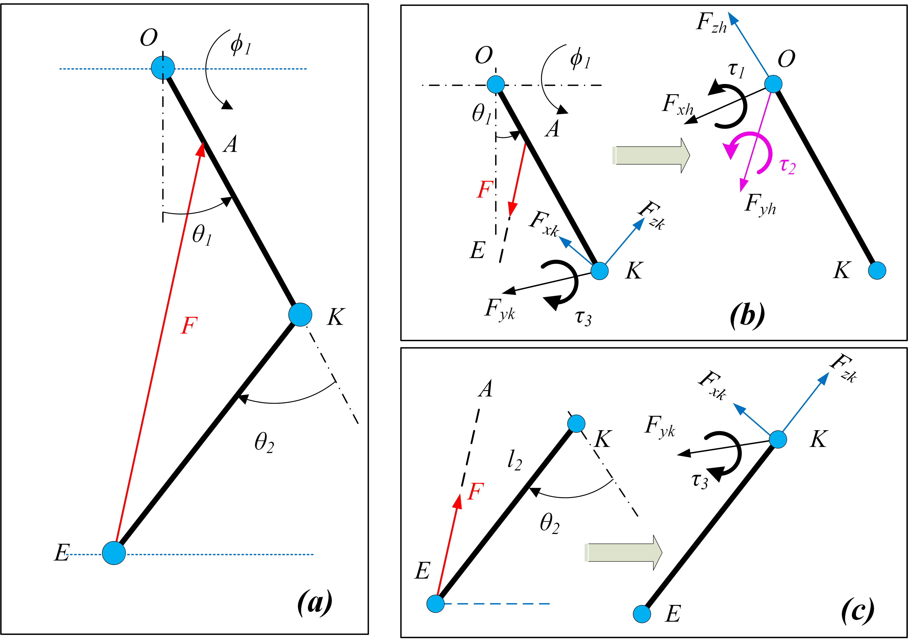
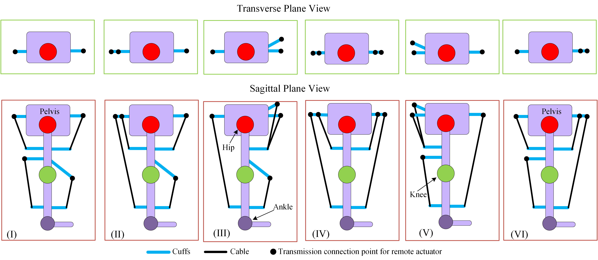
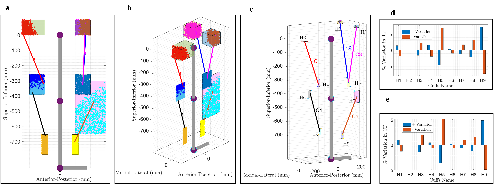
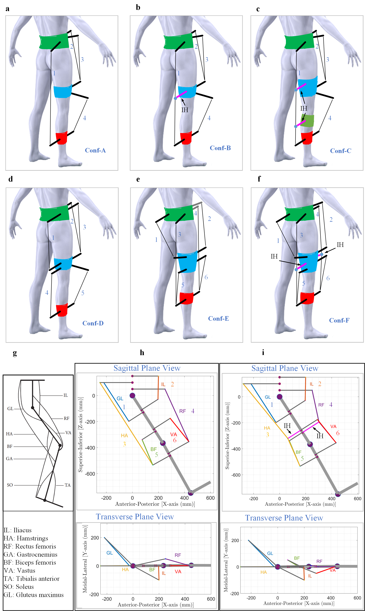
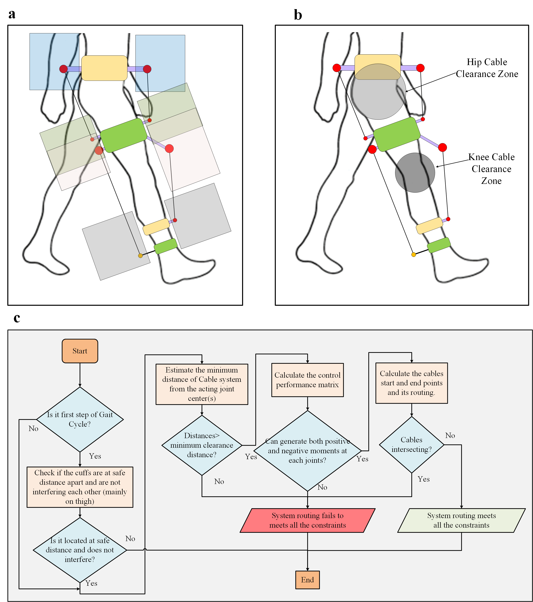
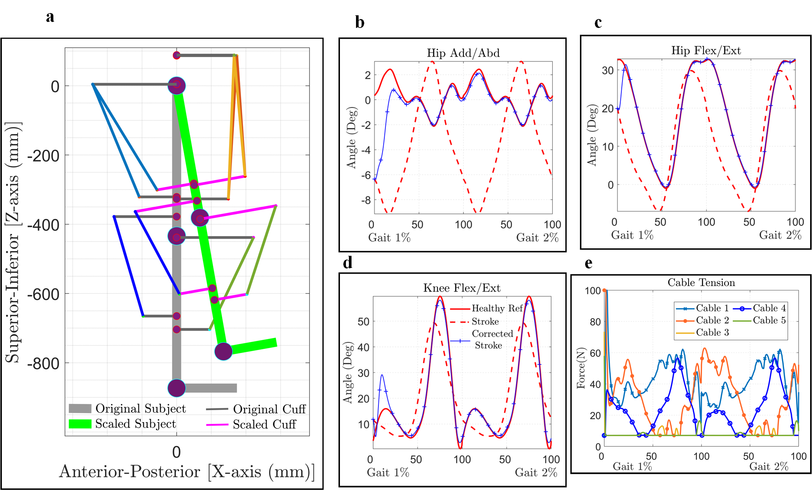
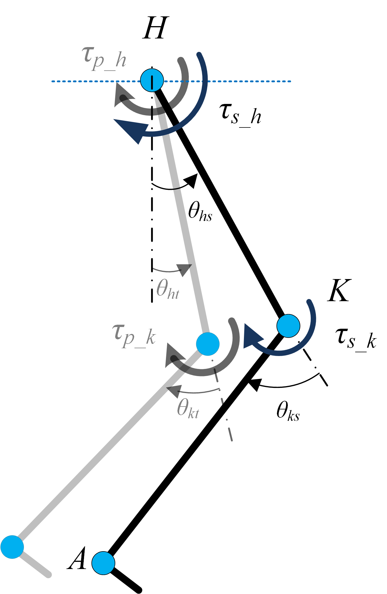
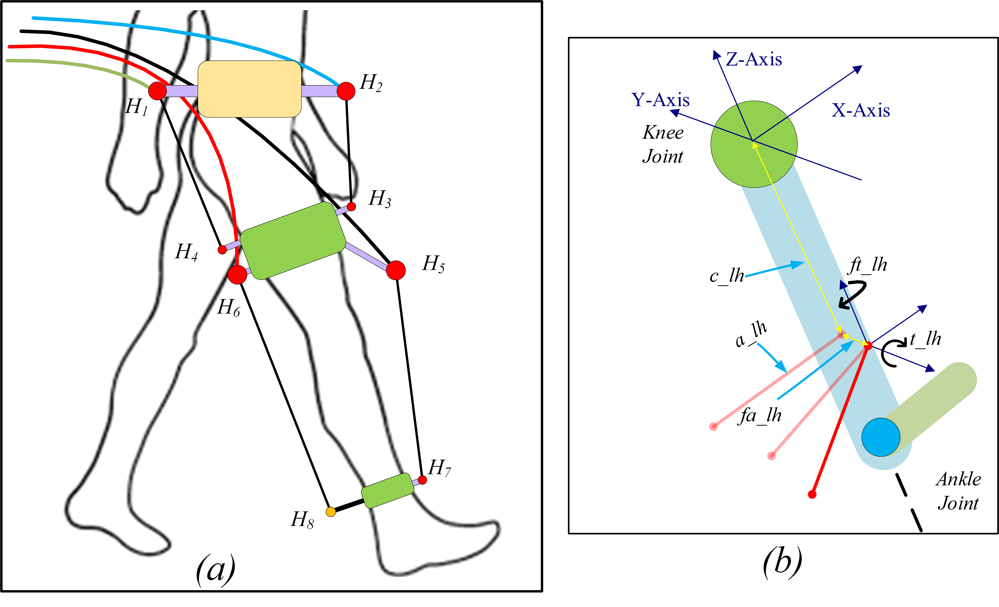

Research focus
C-LREX investigates cable-driven lower limb rehabilitation exoskeletons with emphasis on lightweight, remote actuation, routing design, safe human interaction, and gait assistance.
This page presents the C-LREX research program, including simulation frameworks, routing design, controller studies, bi-planar tracking, stroke gait correction, and the GUI-based C-LREX Tool.
It is designed as a clean GitHub Pages landing page for your publications, software, and project story.
A concise research-facing summary suitable for academic visitors, collaborators, and students.
C-LREX investigates cable-driven lower limb rehabilitation exoskeletons with emphasis on lightweight, remote actuation, routing design, safe human interaction, and gait assistance.
The work develops generalized simulation frameworks, control allocation methods, optimization routines, and subject-specific routing analysis for rehabilitation scenarios.
The project studies healthy trajectory tracking, multi-configuration comparison, bi-planar gait assistance, controller trade-offs, and stroke gait impairment correction.
C-LREX did not begin as a finished exoskeleton. It grew step by step: from a simple cable-actuated leg model, to a generalized design framework, to bi-planar routing inspired by human muscles, and finally to a patient-aware rehabilitation concept aimed at correcting impaired gait.
The central idea behind C-LREX is simple: a lightweight cable can create useful joint assistance if it is routed intelligently. The whole body of work then asks a bigger question: how do we design that routing so it is effective, safe, and meaningful for rehabilitation?
A simple way to express the intuition is: joint assistance ≈ cable force × moment arm. So the same cable can help a lot or very little depending on where it is placed.

The earliest C-LREX work builds the problem from first principles: model the lower limb as linked segments and use cable tension to create moments at the hip and knee. This is the starting point of the generalized framework, which was built to compare configurations, estimate requirements, and avoid expensive trial-and-error prototyping.
In the 2022 framework paper, the goal was not merely to build a mechanism, but to create a simulation-based way to decide which cable design is actually worth pursuing.
Once the idea is established, the next challenge appears immediately: many different cable routings are possible, and each one changes performance. Some layouts are compact, some create larger moment arms, some are easier to build, and some simply do not help enough.
This figure captures that design space. It shows why C-LREX needed a generalized assessment framework rather than a single hand-picked design.


After showing that routing matters, the work becomes more systematic. Instead of guessing good attachment points, C-LREX defines feasible zones and searches for optimal cuff locations and cable paths.
This is where the project shifts from “can cables assist gait?” to “how do we identify subject-specific, high-performing routing choices?” The answer is optimization under practical constraints.
By this stage, the research is not just comparing one or two cable patterns. It is building a whole family of concepts: engineering-inspired routings, longer multi-joint cables, and later muscle-inspired arrangements.
This figure is important because it shows that C-LREX became a framework for generating and judging concepts, not just a single exoskeleton drawing.


Earlier lower-limb cable systems mostly emphasized sagittal-plane motion, but real gait impairment is not purely planar. This is where C-LREX takes a decisive turn: the routing strategy becomes bi-planar and is inspired by human muscle architecture.
That makes the story much stronger. C-LREX is no longer only a lightweight cable device — it becomes a rehabilitation concept that tries to work with lower-limb biomechanics rather than around it.
A cable route may look elegant on paper and still fail in practice. It may intersect the body, interfere with another cable, violate clearance, or fail to generate the required moments throughout gait.
This is why the C-LREX framework introduced explicit routing verification. The system had to be effective, but also wearable, non-interfering, and safe.


A rehabilitation system matters only if it can adapt to real users. The later C-LREX studies therefore move toward personalized analysis: scaling the design to different anthropometries, estimating cable tension needs, and asking whether correction remains effective across subjects and impairment levels.
This is where C-LREX starts to feel clinically relevant. The question is no longer just “can the model track a trajectory?” but “can this routing still work for a different body and a different impairment?”

This is one of the most compelling parts of the C-LREX story. The model does not claim universal success. It shows that many impaired gait patterns can be guided toward healthy trajectories, but severe deviations may demand cable tensions beyond the allowed range.
That honesty makes the work stronger. It turns the framework into a decision tool: it can reveal not only what is promising, but also where a given design begins to fail.

By the end of this journey, C-LREX is not just a cable-driven concept. It is a structured design pipeline that connects biomechanics, cable routing, cuff placement, constraint checking, tracking, and rehabilitation goals.
In simple terms, the framework says:
human motion + cable routing + constraints + control = rehabilitation design insight
That is what makes C-LREX worth reading: it tells a complete story of how an assistive idea matures into a research platform.
Many exoskeleton projects begin with hardware. C-LREX begins with understanding: what routing works, why it works, when it fails, and how to adapt it to the user.
That makes the project attractive not only as a device concept, but as a research framework for rehabilitation robotics.
From simple cable mechanics → generalized evaluation → bi-planar design → muscle-inspired routing → subject-aware gait correction.
Frameworks for assessing cable routing, cuff placement, control performance, and system requirements.
Extension from sagittal-plane analysis to 3DOF bi-planar tracking and muscle-inspired routing concepts.
Comparative studies on PD vs MPC and simulation-based correction of post-stroke gait impairments.
Frontiers in Bioengineering and Biotechnology
Introduces a simulation-based generalized framework and identifies the 4-cable configuration as a promising option.
ICBET 2022
Presents generalized routing assessment across 2-, 3-, and 4-cable conceptual configurations.
Sensors
Extends the framework to a 3DOF lower limb model with hip adduction/abduction and bi-planar cable routing.
ICBET 2023
Studies correction of multiple impaired gait patterns and cable tension requirements in simulation.
CoDIT 2023
Compares PD and NMPC control strategies, highlighting the trade-off between response speed and tracking performance.
Scientific Reports
Introduces a muscle-inspired bi-planar routing framework, weighted multi-objective evaluation, and optimal cuff location estimation.
Wearable Technologies
Extends the impairment correction analysis to different anthropometries and evaluates tracking robustness under varying BMI profiles.
The C-LREX Tool repository provides a GUI-oriented workflow for conceptual configuration simulation, optimal routing parameter estimation, stroke impairment correction, and multi-configuration result comparison.
Visit repositoryResearcher working on cable-driven lower limb rehabilitation exoskeletons (C-LREX), focusing on simulation frameworks, cable routing optimization, control strategies, and stroke gait rehabilitation. Also focused on areas such as design, dynamics, control, robotics, underwater robotics, bio-inspired robotics.